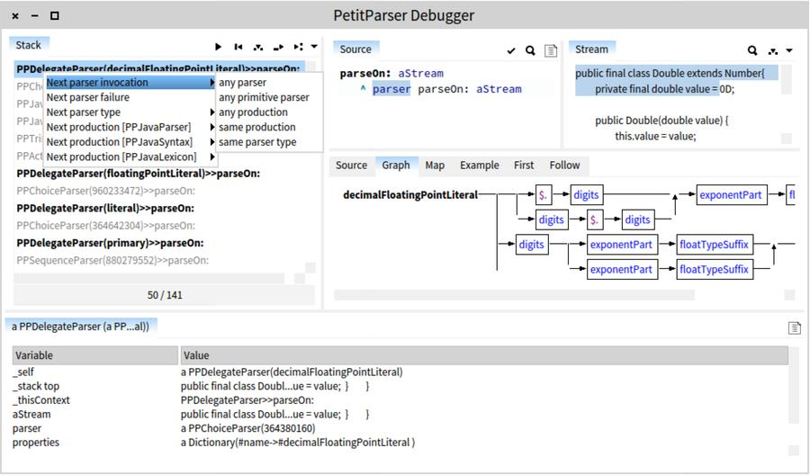

{kind=link}

— (CHIŞ, Andrei. Moldable Tools. Lulu.com, 2016, s. 51. ISBN 978-1-326-74717-6.)
Dizertační práce v podobě knihy Moldable tools konkretizuje a dává hlas myšlenkám developerů, historicky se typicky pohybujících kolem Smalltalku. Zpětným pohledem je možné s trochou nadsázky lidi kolem těchto myšlenek nazvat Moldable hnutím. Pojďme se podívat, v čem ty myšlenky spočívají.
„Moldable“ je možné přeložit jako plastické, tvárné, či formovatelné. Taková je také filosofie stojící za těmito nástroji; měly by být (mimo jiné) tvárné cílovými uživateli.
Kniha Moldable tools konkrétně cílí na programátory, uživatelem se tedy chápe programátor používající debugger, inspektor objektů, nebo vyhledávání v systému. Tyto nástroje jsou typicky psané tak, že není možné měnit a rozšiřovat jejich funkcionalitu.
Motiv, který se v knize stále opakuje je chápání vývojářských nástrojů jako čoček, skrz které programátoři vnímají a uvažují své softwarové systémy. Na tuto analogii navazuje úvaha, jak zajistit přechod k co největší abstrakci nástrojů, směrem od lowlevel technických realizací počítače k doménové abstrakci modelovaného problému.
Obecné developerské nástroje nenabízejí možnost přímo přemýšlet v termínech doménové abstrakce. To umožňují různé na míru dělané nástroje přímo pro konkrétní doménu. Tyto nástroje však nebývají obecné, a obvykle jsou jen obtížně rozšiřitelné.
Moldable hnutí se snaží tyto dva přístupy skloubit a nabídnout jakýsi framework a způsob přemýšlení. Ten by měl usnadnit vytváření sofware s efektivitou klasických developerských nástrojů, zatímco umožní i jednoduchou rozšiřitelnost, včetně přechodu na vyšší úroveň abstrakce.
Co je vlastně myšleno tou doménovou abstrakcí? Programování je možné vnímat jako modelování. Na vytvoření programu řešícího problém je možné nahlížet jako na vytvoření modelu doménové abstrakce. Jakési simulace, která pokud je dostatečně přesná, tak ze své podstaty řeší daný problém.
Můžete si to představit jako třeba modelování ve fyzikálně přesném 3D programu. V něm lze vymodelovat nějakou situaci, třeba křižovatku, a pak zkoušet jak dobře přes ní budou jezdit auta. Nebo větrnou turbínu, u které budete pomocí simulace zkoušet jakou má účinnost, a jak se bude chovat za bouřky.
(Obrázek pochází z videa https://vimeo.com/174539015)
Programování lze z určitého bodu pohled chápat jako podobné modelování reálného světa. Často to známe například z databází, kde se v tabulkách doslova modeluje zákazník, administrátoři, různé záznamy zákazníka a kdo má k čemu přístup. Ve své podstatě je možné spoustu úkolů chápat jako modelování nějakého žádaného stavu, a program pak jako (fyzikální, matematický, logický, ..) engine, řešící korektní a nekorektní změny stavu tohoto modelu.
Objektově orientované programování je přímo inspirované tímto přístupem a k modelování používá objekty. To však neznamená, že by v ostatních paradigmatech nedocházelo k modelování doménové abstrakce, pouze že k tomu dochází na jiné jazykové úrovni. Stejně jako je možné modelovat abstrakci pomocí objektů, tak k tomu lze používat například vnořené funkce, rekurzivní logické inference enginy, pattern matching, či třeba čistou matematiku.
Doménová abstrakce v obecných programovacích jazycích bývá prakticky vždy vyjádřena víc, jak jedním konstruktem jazyka. Například objekt vyžaduje poměrně extenzivní popis a definici metod, než dostatečně přesně vymodeluje například vztah mezi zákazníkem, eshopem, nakoupeným zbožím, pracovníky eshopu a zásilkami.
Z programátorského hlediska prakticky vždy dává smysl vytvořit si nástroj pro práci s doménovou abstrakcí. V téměř každém eshopu se s modelem doménové abstrakce nepracuje pomocí shellu programovacího jazyka, ale pomocí nějakého grafického rozhraní. V něm je možné například zrušit objednávku kliknutím na tlačítko, či sledovat její stav.
S jednou z povedenějších ukázek jsem se setkal v předchozí práci. V té jsem pracoval na systému, který umí v reálném čase analyzovat záběry z bezpečnostních kamer, identifikovat v nich jednotlivé objekty a provádět nad nimi vysokoúrovňové operace. Mezi jinými šlo například o sledování tunelů, kam vchází lidi. Také musel umět odlišit ostatní věci, které se v tunelech pohybovaly, ať už se jednalo o vlaky, nebo o různá zvířata, jako třeba krysy, kočky, nebo vrány.
Pro trénování systému vytvořil senior developer nástroj doménové abstrakce pro případ, kdy bylo nutné systém přetrénovat, protože něco vyhodnotil špatně. Jednalo se o program umožňující jednoduše a intuitivně procházet snímky záběrů z videa a obarvovat v nich různými barvami pohybem myši objekty, například lidi nebo ony zmiňované vrány, či vlaky. Systém potom použil tato data pro trénování klasifikátoru.
Podobných programů tam bylo více, tento na mě ale obzvlášť zapůsobil, neboť umožnil přechod od nízkoúrovňového popisu doménového modelu k vysokoúrovňové doménové abstrakci. Standardní nízkoúrovňový model, se kterým jsme jako developeři pracovali se skládal ze snímků, bitmap, blobů barev a spousty kódu a raw vektorových dat natrénovaných klasifikátorů. Člověk musel přesně chápat, jak systém funguje na nízké úrovni, aby byl schopný rozumět datům se kterými systém pracuje. Na druhou stranu tento program použitý pro klasifikaci by zvládlo použít malé dítě, tak moc byl jednoduchý a intuitivní.
Debugging can be a laborious activity requiring much manual and repetitive work. On the one hand, debuggers support language-level operations, while developers think in terms of domain abstractions. As a consequence, developers need to mentally construct high-level abstractions on top of language constructs, which can be time-consuming. On the other hand, debuggers rarely provide support for identifying and navigating through those high-level abstractions. This leads to repetitive tasks that increase debugging time.
Debugger je typickou ukázkou programu, který pracuje jen na úrovni debugovaného jazyka, což může být ve spoustě případů špatná úroveň abstrakce.
Pokud máte kód eshopu a zákazník v něm způsobí chybu, je často problém už jen zjistit o jakého zákazníka to šlo, a pak se noříte do nízkoúrovňové reprezentace, kde najednou řešíte custommer_id a objektové reprezentace a ORM mapování na databázi, či přímo SQL dotazy.
tinySelf, můj interpreter programovacího jazyka, je napsaný v restriktivní kompilované verzi pythonu. Teoreticky tedy mám možnost používat k debugování nástroje pythonu, jmenovitě například debugger pdb, či debugger zabudovaný v PyCharmu. Když ve svém jazyce objevím chybu narážím na problém, že použitý debugger pracuje na moc nízké úrovni modelovaného problému. Modeluji lexer, parser, kompilátor a interpreter bytecode. Debuger mi však nabízí pouze debugování „hmoty“, ze které je modelováno.
Například se mi stalo, že jsem měl problém v nacházení správných parent slotů, což v Selfovských jazycích nahrazuje dědičnost. Pokud máte zkušenost s na-třídách-založenými-programovacími-jazyky, představte si to třeba tak, že jsem měl objekt, jehož třída dědila od jiné třídy, kde byl nějaký atribut. Při pokusu o přístup k tomuto atributu došlo k chybě.
Když jsem se snažil tuto chybu debugovat, neustále jsem narážel na to že ve chvíli, kdy používám nástroje pythonu narážím na to že ve skutečnosti debuguji moc nízkou úroveň modelu. Aby se vykonala jedna instrukce bytecode v mém interpretru, bylo nutné projít stovky řádků kódu v pythonu jazyce. Typicky bylo třeba projít desítky instrukcí, než jsem porozuměl povaze problému. Než jsem došel do správného bodu, strávil jsem krokováním klidně půl hodiny.
Pocit, který jsem z toho měl, byl asi jako kdybych se snažil opravit gramatické chyby koukáním na písmena na papíře pod mikroskopem. Ve chvíli kdy se snažím opravovat chyby v textu mě nezajímá jejich reprezentace a přesné rozložení částicemi inkoustu na papíře. Přestože je zcela možné použít tuto úroveň abstrakce, v běžném životě je příliš nízká. Stejně tak já jsem potřeboval přejít k mým tinySelfovým objektům, nikoliv k jejich reprezentaci, a až teprve tehdy se mi podařilo problém najít.
Autor v knize zkoumá různé možnosti, jak je typicky dosahováno rozšiřitelnosti. Například se věnuje různým architekturám aplikací, a jak jsou v nich vytvářeny pluginy. Mimo jiné probírá a analyzuje integrace pluginů vůči standardnímu API, použití konektorů, či message busu. Zkoumá také skládatelnost aplikací ve stylu unixu. Na různých studiích s reálnými uživateli ukazuje, jak moc je náročné vytvoření pluginu a rozšíření funkcionality komponenty.
Také se věnuje způsobům, jak zvýšit úroveň doménové abstrakce vývojářských nástrojů, kde zmiňuje dva různé přístupy:
Obecné jazyky postrádají jazykové konstrukty pro specifické domény. Developeři tak musí používat různé ostatní prvky jazyka k modelování doménových abstrakcí. V Pythonu mezi tyto prvky často patří například objekty, kontext manager, nebo dekorátory.
Oproti tomu existují jazyky, které umožňují definovat různé DSL a dynamicky je střídat. Například Helvetia, či REBOL, jenž umožňuje přímo přistupovat k BNF parseru a definovat do něj nové gramatiky. Díky tomu je možné například uprostřed jazyka najednou používat parser angličtiny pro businessovou logiku. Také již v základní instalaci přichází s datovými typy a gramatikou pro URL, email, či různé měny. Místo aby bylo nutné vytvářet objekt ručně, tak jak by se to dělalo třeba v Pythonu (EmailAddress("nejaka@adresa.cz")), tak jazyk rovnou rozumí emailové adrese a přímo z ní vytvoří cílový nativní objekt. K zvýšení doménové abstrakce tedy dochází úpravou jazyka, aby odpovídal doméně. Například je možné definovat nativní objekty a parser pro zákazníky a různé transakce mezi nimi a eshopem. Debugger a další nástroje poté nerozlišují, jestli se pracuje s rozšířenou či nerozšířenou částí a tedy podporují větší abstrakci jaksi „nativně“.
Moldable tools se oproti tomu zaměřuje na adaptaci existujících nástrojů, místo jazyka. Nedochází k úpravám jazyka, ale debuggeru, inspektoru a dalších nástrojů.
K tomu jsou navrženy následující zásady:
Developeři poté můžou adaptovat a rozšiřovat jednotlivé nástroje tak aby odpovídaly relevantnímu vývojářskému kontextu, pomocí:
V knize je to samozřejmě všechno detailně rozebíráno a vysvětleno, zde jsem to vzal jen čistě orientačně.
Autor vytvořil pro ověření svých tezí tři různé nástroje:
Tyto nástroje umožňují zkoumat a uvažovat nad runtime objekty, jejich chováním a abstrakcemi.
Inspector umožňuje objektům definovat jak se mají zobrazit přidáním speciálních metod do objektu. Cosi jako .__repr__() či .__str__() (nebo .toString()), ale pro user interface inspectoru, či debuggeru, nebo spotteru.
Objekt obsahující obrázek tak například může zobrazit konkrétní bitmapu, prvek grafického rozhraní svůj widget, SVG mapa obrys konkrétní země a barva čtvereček s barvou. Každý objekt může navíc definovat „zobrazovací predikát“, určující kdy a jak se má zobrazit, jakož i ovládací prvky. Ty umožňují například objektu barvy měnit nastavení barvy pomocí grafického výběru barev v paletě, místo zadávání hexadecimálních hodnot. „Zobrazovací predikát“ přitom nemusí být jeden, v závislosti na kontextu je možné například SVG obrázek zobrazit jako bitmapu, otevřený ve vektorovém editoru, vypsaný jako tabulku bodů, či jako XML reprezentaci.
— (CHIŞ, Andrei. Moldable Tools. Lulu.com, 2016, s. 51. ISBN 978-1-326-74717-6.)
Inspector tímto umožňuje objekty zobrazovat v jejich kontextech. Zároveň taky nabízí možnost zkoumat připojené objekty a procházet jak mezi nimi, tak i v historii zobrazených objektů a jejich kontextů, asi jako když uživatel kliká na hyperlinky webové stránky.
Spotter nabízí cosi jako search engine pro jednotlivé objekty, opět na základě aktivačních predikátů definovaných přímo v objektu. Umožňuje například vyhledávat objekty podle jejich hodnot, či podle tagů. Obecně nabízí objektům způsob jak jednoduše na pár řádek nabídnout své vyhledání na základě doménové abstrakce, ale také se je snaží nabídnout k automatickému objevení v závislosti na konkrétním kontextu. Slovy autorů:
[.. spotter offers ..] inexpensive creation of search processors, support for multiple data sources and context-aware searches.
Zlepšení výsledů vyhledávání je dosaženo pomocí:
(i) group and rank results, (ii) support rapid skimming through result sets, and (iii) enable in-depth exploration of result sets
Debuggers are comprehension tools.
— strana 114
Nejvíc práce se pravděpodobně kulminuje v debuggeru, kterýžto v sobě integruje oba předchozí přístupy a snaží se přenést abstrakci co nejvýše.
Moldable debugger by měl umožnit developerům vytváření a automatizaci vysokoúrovňových abstrakcí. Uživatel může definovat vlastní grafickou reprezentaci, grupování relevantních debugovacích operací pro konkrétní doménu a kontext. Debugger dále nabízí automatické objevování vhodných debuggerů a umožňuje jejich dynamické přepínání.
(CHIŞ, Andrei. Moldable Tools. Lulu.com, 2016, s. 126. ISBN 978-1-326-74717-6.)
Zde je například možné vidět debugger pro parser:

(CHIŞ, Andrei. Moldable Tools. Lulu.com, 2016, s. 124. ISBN 978-1-326-74717-6)
Typické rozšíření se skládá z doménově-specifikých debugovacích operací a doménově-specifického pohledu, přičemž oboje je založeno na debugovací session.
Developeři můžou vytvářet doménové abstrakce pomocí:
Co se mi opravdu líbilo je podloženost knihy čísly. Autor své teorie testoval na několika desítkách developerů, kontroloval statistiky, zajímalo ho jak moc jsou jeho nástroje používány, co lidem vyhovuje a co ne, jaká je průměrná délka psaných rozšíření a tak dál.
— (CHIŞ, Andrei. Moldable Tools. Lulu.com, 2016, s. 105. ISBN 978-1-326-74717-6.)
Ten poslední bod si zaslouží ještě víc rozvést, protože jedním z cílů projektu je co nejvíce usnadnit tvorbu nových rozšíření. To znamená, že úprava, či vytvoření nové funkcionality měla proběhnout rychle, ale také měla být relativně krátká a nenáročnáUA. Jak je možné vidět z tabulky výše, ale i z několika dalších tabulek v knize, tento cíl se skutečně povedl. Úspěch je možné vidět i v adopci a přijetí těchto nástrojů jakožto oficiální součásti Pharo Smalltalku.
Autor v knize odvádí skutečně obdivuhodnou míru meta-přemýšlení, navíc podanou dobře pochopitelným způsobem. Velmi mi pomohl pochopit co myslel Alan Kay když mluvil o využití počítačů k simulacím. Dřív jsem to vždy bral až moc doslovně, ve smyslu fyzikální simulace někde v CADu. Zpětně je mi jasné, že nemyslel fyzikální úroveň, ale úroveň modelování doménové abstrakce.
Pokud vás zajímá, jak budou vypadat vývojářské nástroje za dvacet let, a případně se chcete podílet na této snaze už nyní, rozhodně doporučuji knihu k přečtení.
There are two ways of constructing a software design: One way is to make it so simple that there are obviously no deficiencies, and the other way is to make it so complicated that there are no obvious deficiencies. The first method is far more difficult. It demands the same skill, devotion, insight, and even inspiration as the discovery of the simple physical laws which underlie the complex phenomena of nature. — C.A.R. Hoare
Software is expressed using programming languages and crafted with the aid of tools. Programming languages are frameworks of communication for transferring abstract models of the real world from the human mind to computers [Ingalls 1981]. They evolved to provide developers with a vocabulary that hides the details of the computer, and strive to enable developers to create and to express software applications in terms of domain abstractions. This occurred since expressing software in terms of domain abstractions rather than generic programming language constructs has a positive impact on program comprehension. Nevertheless, software has no physical shape. Developers craft software exclusively by interacting with development tools. Development tools provide the means for transforming an abstract model of the real world from a human’s mind into a program ( i.e. , executable model), within the design space of a programming language. Hence, development tools have a direct impact on the thinking habits of developers, affecting how they perceive, craft and reason about software [Dijkstra 1972]. Even if developers can design a software application in terms of domain abstractions, to take advantage of domain abstractions when creating and evolving that application their development tools need to incorporate those domain abstractions.
— (CHIŞ, Andrei. Moldable Tools. Lulu.com, 2016, s. 1. ISBN 978-1-326-74717-6.)
Hence, a generic and disconnected approach of integrating searching into IDEs leads to information foraging loops where significant effort is wasted recovering concepts instead of directly reasoning in terms of those concepts.
— (CHIŞ, Andrei. Moldable Tools. Lulu.com, 2016, s. 78. ISBN 978-1-326-74717-6.)
Software is contextual by design. Stakeholders, developers, technology and the randomness of everyday life make each software system unique. Yet, when crafting software our tools act as if all software systems are the same. This entire work is about showing that this does not have to be the case. Tools are means to an end. We should shape them, they should not shape us.
— (CHIŞ, Andrei. Moldable Tools. Lulu.com, 2016, s. 158. ISBN 978-1-326-74717-6.)
lulu.com je webová služba, která vám umožňuje nechat si na míru vytisknout knihy. Taky mimo jiné umožňuje autorům jednoduše začít knihy prodávat právě tímhle tiskem na míru, kde se nic netiskne dopředu. Díky tomu nehrozí, že vám třeba zůstane někde ve skladu sto kusů neprodejné knihy, jako u klasických vydavatelství a začínajících autorů.
Ačkoliv je to skvělá služba, kterou často používám k tisku například manuálů, nebo různých zdrojů čítajících víc jak padesát stránek, kvalita lepených knih je poměrně hodně špatná, a není to od nich první kniha, u které se mi stalo, že se mi během čtení rozpadla:
Osobně beru knihy do jisté míry jako spotřební zboží, ale tohle se mi zdá už kapku moc.
Kniha je dostupná pod licencí Creative Commons na stránkách Univerzity v Bernu:
{kind=link}
{kind=link}
{kind=link}
{kind=link}
{kind=link}